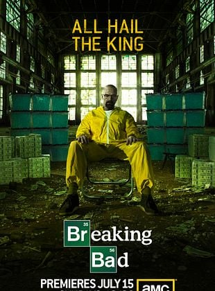

Série de televisão
Breaking Bad
2008 – 2013 | 5 temporadas | Drama / Crime / Suspense
Walter White é um professor de química que recebe um diagnóstico de câncer e passa a enfrentar dificuldades financeiras. Ao lado de um antigo aluno, Jesse Pinkman, ele começa a produzir metanfetamina para garantir o futuro de sua família.
Criação: Vince Gilligan
Elenco: Bryan Cranston, Aaron Paul e Anna Gunn
Gêneros: Drama, crime e suspense